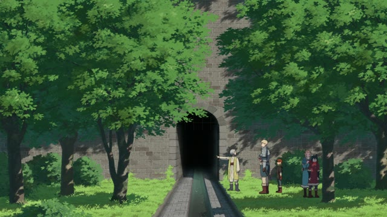
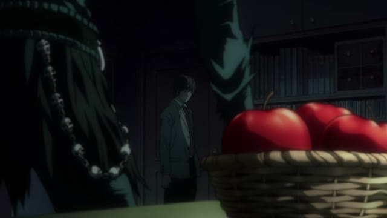
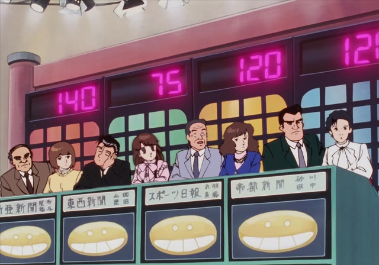
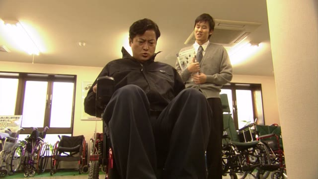
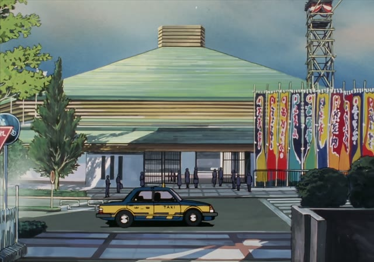
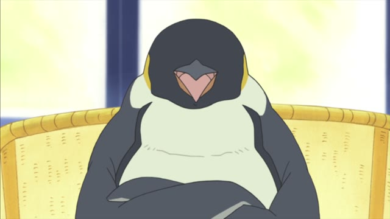
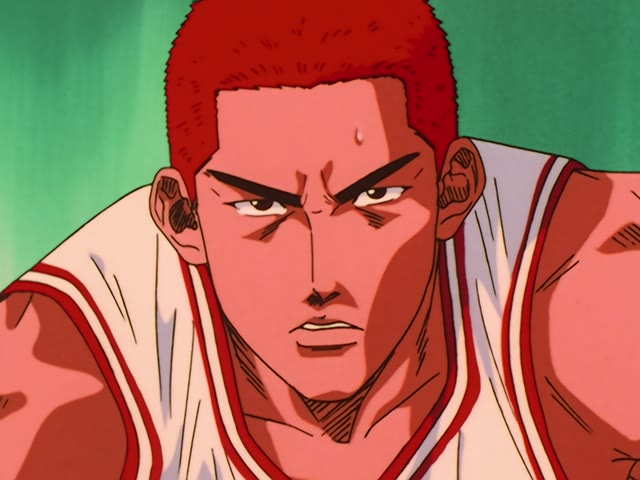
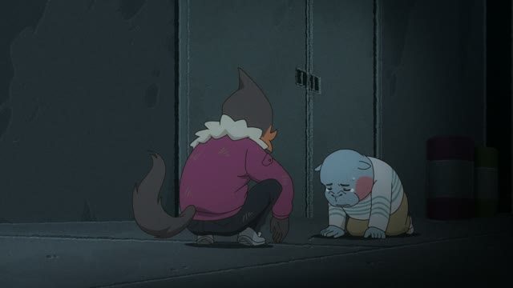

～ことができる
| Polite | ～ことができます can't: ～ことができません |
|---|---|
| Casual | ～ことができる can't: ～ことができない |
Same meaning: "can do". Only the politeness changes.

Dungeon Meshi · Episode 22
つまり 迷宮に戻ることができます。
"In other words, [through here] you can get back into the dungeon."
Take a verb in its dictionary form and add ことができる: 行く + ことができる = "can go". こと turns the action into a thing, and できる says that thing is possible.
On this card, 戻る + ことができます (the polite ことができる) = "can go back". He's explaining where a path leads, and ことができる fits that kind of clear, careful explaining.
In everyday talk people often say the same thing with the shorter potential form (戻れます). ことができる sounds a bit more careful.

Death Note · Episode 1
オレの姿を見ることができる
"[Only you] can see me."
Casual is just ことができる. On this card, 見る + ことができる = "can see": Ryuk is stating a rule of the notebook.
Quick Examples
At a shop counter, holding your card.
カードを使うことができますか。
"Can I use a card?"
PoliteA museum guide explains the rules.
中で写真を撮ることはできません。
"You can't take photos inside."
In "can't" sentences が often becomes は: it singles out the one thing that isn't possible.
PoliteA kid, proud the next morning.
一人で寝ることができた！
"I managed to sleep on my own!"
Past: できた, "was able to, managed to".
CasualShowing a friend a new app.
これで日本のドラマを見ることができるよ。
"You can watch Japanese dramas with this."
CasualWith and without
日本語ができます。
"I can do Japanese." A noun goes straight in front of できる, no こと. Same with 約束はできません, "I can't promise".
日本語を話すことができます。
"I can speak Japanese." A verb needs こと first, to turn it into a thing.
Examples from Media

Oishinbo · Episode 91
春になると 磯辺で見ることができます
"In spring, you can see them on the rocky shore."
A hint in a food quiz.

1 Litre of Tears · Episode 8
このように、わずかな力で動かすことができます。
"Like this, you can move it with very little strength."
Showing how an electric wheelchair works.

Oishinbo · Episode 30
私たちは大相撲の千秋楽を 楽しむことができました
"We got to enjoy the last day of the sumo tournament."
できました: "were able to, got to".

Shirokuma Cafe · Episode 42
だから眠ることができないんだよ
"That's why [he] can't sleep."
Can't: ことができない.
Vinland Saga · Episode 22
おふくろは病気で 働くことができなかった
"My mother was sick and couldn't work."
Couldn't: ことができなかった.
Last Samurai Standing · Episode 3
おかげで私たちは 山を下りることができた
"Thanks to him, we were able to get down the mountain."

Slam Dunk · Episode 98
くっそ どうすれば この試合に出ることができる
"Damn, what do I have to do to get into this game?"

Odd Taxi · Episode 9
自信がないから 自分で自分を認めることができない
"You've got no confidence, so you can't accept yourself."